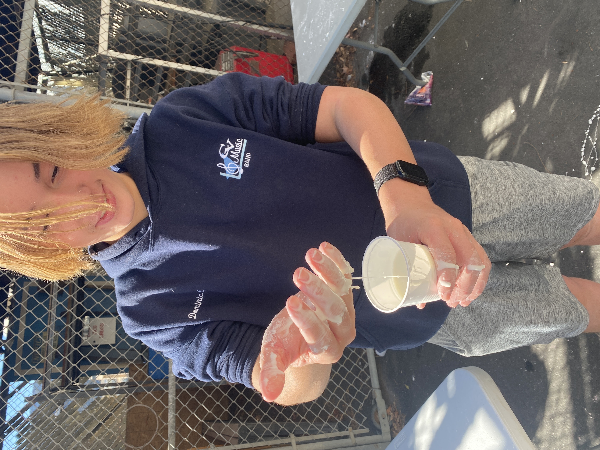
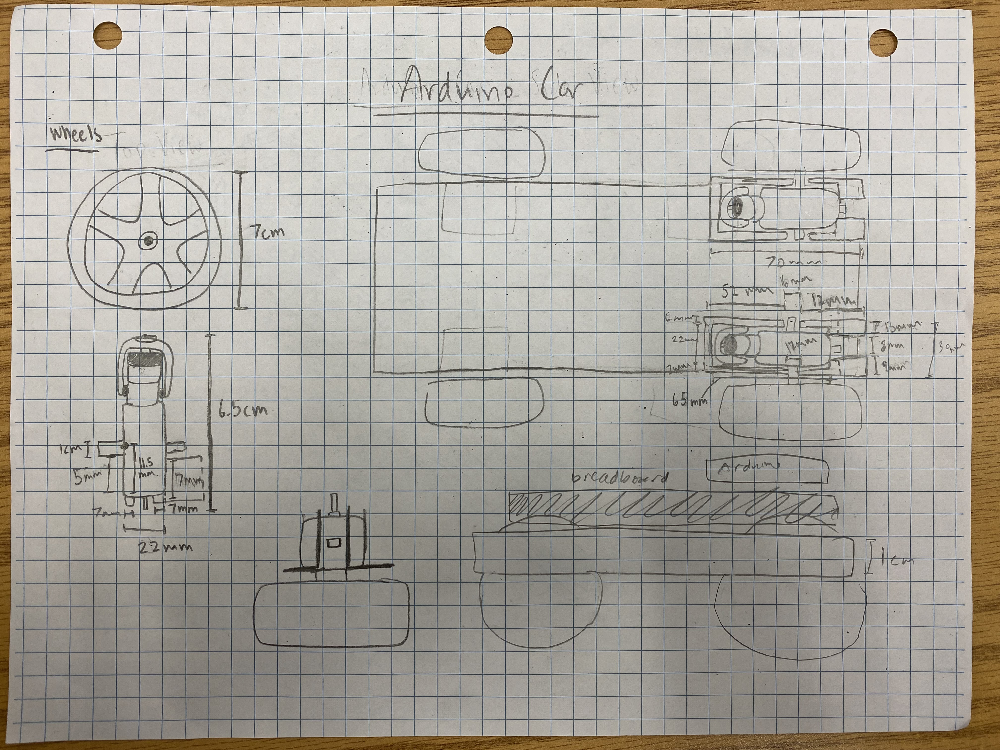

This past week, we have been learning how to set up our websites through AWS. After we created our websites, we started to work on actually designing our websites by using html commands on our own. On August 25, we were shown slides about safety and the basic cycle of engineering. After the slides, we did an activity involving marbles and pipes where we attempted to put a marble in a bucket. My team failed as we lacked communication and someone who could really lead us. There was no set method that we were going to take so we were all lost. The lack of a leader who should have had figured out a good plan to do throughout this activity was a fatal flaw in our group, resulting in our failure to complete the activity.
During last week, we started to CAD our designs of our own Rube Goldberg Designs. We had practice on how to use TinkerCad and now we are able to create our own designs. We started working on actually making our Rube Goldberg projects using cardboard, although we weren't able to get much done. At first, we didn't know how to use the measurements on the TinkerCad, but we decided to use millimeters as centimeters and then cut the measurements in half in order to reduce the size of our project. I would like to keep working on it this week to really make sure that the structure will be sturdy enough to perform all of the simple machines.

During this week, we have been workin on our Rube Goldberg Machines and my group was able to finish it today, September 15, 2023. Initially, we had problems where the needle would hit the balloon, but it wouldn't pop it. We suspected that it was because there was not enough force generated from the pendulum, so we looked around our machine to see what we could do to increase the force. We discovered that the opening where the baseball had to go through to hit the lever/balance was small enough so that the baseball was able to grow through, but the ball would slow down. So, we cut it out more in order to reduce the friction exerted from the wall to the baseball. This helped to generate enough force, but now we were faced with the problem with the inaccuracy and unpredictable tendency of our machine. The object on the pendulum swing would constantly rotate, being unable to hit the balloon almost all of the time. As we tried to solve the problem, we decided to use two strings on the object to reduce how much the object swung to the left and right, allowing it to go straight into the balloon. We also added a small box to the back of the balloon to serve as a support for the balloon to lean on. After all these minor adjustments, we were able to successfully pop the balloon at the end.
After we were able to complete our final draft of our Rube Goldberg Machine, it made me realize the importance of testing everything to make sure that everything was working correctly. In addition, I now know how it takes multiple adjustments to anything to improve it. Anything can be improved, even with small, minor adjustments.

During this week, we worked on learning about the differnt components of a Personal Computer(PC), and to actually dissect one. We dissected the computers while looking at instructions on a slide on our own pace. After we finished dissecting and identifying the parts of the computer, we had to put everything back together to see if they would work. It was a little difficult to put everything together, but we were able to put it back together in the end after looking at pictures of what it was supposed to look at. After we put back a computer, we need to see if we did it correctly in order to see if we put everything in the right places. Our computer was able to turn on and it had a green light on, indicating that it was working.
Two days after we dissected the computers, we received a worksheet to color in some of the parts of the computer. It was a bit difficult because the graphics and the overall image quality was bad, but I was able to finish mine after around 20 minutes.


Today, we worked on making a prosthetic hand out of cardboard, string, duck tape, and rubber bands. After finishing the bioengineering slides, we worked on making a prosthetic hand of our own. Our goal was to pick up an empty plastic water bottle using just the prosthetic hand. We were able to create a prosthetic hand that is similar to a gauntlet by using duck tape, cardboard, and rubber bands. Initially, I created tendons on the back of the hand so that the prosthetic hand would function like a real human hand. After adding tendons, we realized that they served no purpose to the hand. So we decided not to add the tendons. After this, we worked to keep the hand from destroying itself because the cardboard would keep bending from the rubber bands pulling on it. In order counter this, we cut the cardboard so that the lines did not bend in the same way as the rubber went. This allowed for the fingers to not get destroyed whenever we tried to use it. In the end, we were able to pick up the water bottle by only using the prosthetic arm.
This week, we worked on building our own bottle rockets using 2 liter soda bottles, cardboard, tape, hotglue, and pencils. We learned about Aerospace Engineering this week, and this was a topic that was particularly interesting to me because it is the field of my interest. It was cool seeing the different types of engineering that involved physics, and it was especially intersting when we watched videos of actual rockets that were launched, whether they failed or succeeded. After learning about rocket and the forces that act upon it, we immediately went to CAD our models of our bottle rockets. At first, my group had a problem with our design because we didn't know how to desgin our rockets. After a while, we decided on a simple desgin.
After we finished designing our Bottle Rockets on TinkerCad, we started building our rockets using the bottles that we brought. My groupmates and I forgot to bring our bottles so we needed to use one that was in the classroom. Although it took us a while to design our rockets on TinkerCad, we were able to finsish building our rocket really fast. It was pretty simple too, so it wasn't going to take a while. In order to build the rocket, we got four pieces of cardboard to build the wings/flappers on the side of the rocket to help it to fly straight. But, after cutting out the first wing, we discovered that it was really weak because of how we cut it against the cardboard. In order to fix this problems, we cut it the other direction. In addition, we put tape on the wings so that it would be more aerodynamic. After this, we worked on building the cone of the rocket so it would be even more aerodynamic. The cone was initially built using cardboard, but we noticed how it made the rocket really heavy, and it was really difficult to make shape the cardboard into a cone. So, we decided to make the cone using paper to reduce the weight of the rocket, as well as have a cone that was really aerodynamic. Finally, with all of the parts made, we hot-glued all of the parts on to the rocket. For fun, we even added the Coca Cola logo from the bottle as a flag for our "sponsers".
Since the rockets were finally built, we just needed to wait until the day we were actually going to try to launch the rocket into the air to see how far it was going to fly. On October 20, 2023, we went outside to finally test our bottle rockets. On this day, we filled our rockets up with water because it was going to the be the fuel for our thrust in order to propel the rocket through the air. My group decided to fill a third of the rocket with water because we thought it was preferable to have more fuel for the rocket to fly farther. We angled our rocket high so that it could fly farther up in the air. When our rocket was launched into the air, we discovered that it would twirl around and it immediately went straight into the ground and moved further like a car. On the initial flight, the rocket flew pretty far, and we were pretty satisfied. As a result, we decided to anlge the rocket as flat as we could in order to let it fly in the horizontal direction as far as it could, but I believe the initial launch was better because on the second launch, our rocket was really damaged, already losing the pencil on the bottom as well as a wing. Overall, I thought this was a fun activity that did not take as long as the Goldberg Machine and I would like to do more engineering projects like this again.

During this week, we learned about the topic of Environmental Engineering. Environmental Engineering is pretty self explanatory, so we started working on building something right away. On October 26, 2023, we started building our own water filters using bottles, rocks, pebbles, sand, and cotton balls. Our goal was to turn the dirty water consisting of a lot of wood and dirt, into clean, clear water that would be drinkable. Of course, we did not want to actually drink the filtered water, but it had the same concept. My group decided to put the cotton balls first so that the water would be filtered in the end, and put everything from largest to smallest so that there would not be a lot of space for the dirty components of the water to pass through. In the end, our water was not really clean once we tried to filter it, but it was a lot cleaner from when it first started. We believe that it was because of the cotton ball at the end because it was really dirty. No matter how many times we would filter it, the water always turned out to be brownish. We determined that the problem may have been the cotton filter that turned brown, changing the water at the end into a brownish color. In the end, we could only make the water a little clear with a hint of brown due to the brown cotton filter.
This week, we learned about Electrical Engineering and about how circuits worked. We first got two worksheets about engineering and filled them out. One of them was just the notes on the Electrical Engineering Unit, while the other worksheet contained the Ohm's Law and many example problems. Thankfully, I already had an idea of the equations from my AP Physics 2 class, so I didn't have trouble filling it out. Afterwards, we worked on TinkerCad to complete labs that were given to us. We learned to make series and parallels in the labs. Although actually making the labs was pretty difficult, I think it was a fun activity to actually try making circuits of our own as we got to play with it. Later, we would start working on actually making circuits on a real breadboard.


During this last week, we worked on actually making circuits on breadboards that we were given. At first we tried to actually make series and parallels and it worked out. At first, my group wasn't able to make it, but we understood it after realizing that the negative currents from the lights would not help the other lights to light up. Along with the lab, we were given worksheets to fill out using the metrimeter to measure the resistors. It was a bit confusing at first, but we understood after we touched both wires of the resistors using the two probes on the metrimeter. After filling out the worksheet and completing the labs, we were finished with all the circuit building that day, so we were going to move on to coding the lights to blink and do other interesting patterns using the arduino. At the time, we were only using the arduino as the power source of the circuit, but we learned that we could also code it to create many different patterns. Although this was going to be saved for later, I was pretty excited for this because I enjoy programming. The circuit building on this day really helped my group to understand how the circuits really worked as the TinkerCad doesn't really show how it works. The hands-on labs really showed me how I'm more of a hands-on and a visual learner when it comes to difficult concepts.

After building our own circuits in parallels and series, we worked on coding our arduinos to make various different patterns. We needed to download an extension on Google Chrome in order to code on it as we needed a way to connect to the arduino. At first, the coding was confusing because it was a bit different from what I was used to from java. It still had ints and more, but what the ints represented really confused me. But, after learning it a bit more, I was able to understand how to code different patterns so we began completing the labs. The labs were easy because I understood how loops worked. As we were completing the labs, we got sidetracked to make a different pattern of our own, which was really fun. After this, it was just copying down the patterns that were listed on the table in the slides. In the end, we were unable to complete the extra lab because we ran out of the free compilations that was included in the extension.


For the Business Engineering unit, we learned that Business Engineering focuses more on the human aspect in engineering, where it mainly focuses on the wants of the consumers. So, for this unit, we came up of an engineering project of our own and created a presentation on it. At first, my group had a hard time figuring out what to do for the slides as we did not have many ideas. A lot of the things we came up with were already made so it required a lot of creativity to think of something. I decided to share my idea on Healthcare rings as my dad is a doctor, so he tells me a lot of the problems in the Healthcare industry. Our group went with my idea and started making the slides. Making the slides was not hard as it was pretty self-explanatory and we did have a little bit of fun making the slides. After finishing, we just assigned the different slides for when we were going to present our idea to the class. Most of the time the presentations had ideas that were already implmented. But, others were kind of creative as they were some things that we hadn't thought of as it was very unrealistic. The presentations were not that serious so it was fun to listen to the many different ideas that all the groups were sharing.


During the first week back from Winter break, we learned about chemical engineering. After doing our website updates that we weren't able to do at the end of first semester, we watched the video on chemical engineering. For our project in chemical engineering we made oobleck using corn starch and water. Mr. Kim did not give us the necessary measurements to make oobleck so that we could figure it out ourselves. Although some people took it safely by using a little of the limited corn starch at a time, others failed after using it all up with tons of water. At first, my partner, Dominic, and I took it safely while others asked us for the rest of our corn starch, but we suddenly decided to use all of the corn starch after successfully making a small batch of oobleck. This turned out to be a bad mistake on our part because we added a bit too much water to our already fine oobleck. In order to make the almost perfect ratio, we scavenged around the tables for leftover corn starch and our oobleck turned out to be satisfactory. I realized how important it is to experiment with little resources at a time in order to not use up all of the limited resources. This project was really fun for me as I enjoyed chemistry when I took it over the summer.
During these past two weeks, we worked on the Arduino Car project. In the first week, we were given the choice between the Arduino Car involving Computer Engineering, or the Mousetrap Car involving Mechanical Engineering. I partnered up with Dominic to take on the Arduino Car project. To prepare for the project, we first had to make project proposals, which took the whole first week. It was basically a bunch of paragraphs that introduced our project. This was the boring part, but it helped us to understand how engineering worked in the real world when introducing new projects. In the second week, we worked on making the actual sketches of our design and doing our CAD. I did the sketch on graph paper while Dominic worked on the CAD of the car. Instead of using TinkerCad to do our project, Dominic got a professional app that was more precise and easier to use than TinkerCad. We decided that the car would be made using Dominic's 3d printer. After finishing the CAD and the sketch, Dominic used his 3d printer over the weekend to make the car. In addition, I tried to learn how to code the Arduino Car to move the way we wanted.
During this time, we were able to design and build a fully functional Arduino Car that was able to utilize sensors to avoid collisions. Athough the car was pretty rough, the initial design worked. We considered this as our first iteration and quickly disassembled it to redesign it. But, the problem that we came across was that our new designs did not work at all. In an attempt to save our project, we rebuilt the arduino car with our previous design, but it still did not work. After trying almost everything, Mr. Kim helped us to find the problem and rebuild the circuitry. We discovered that the problem was that the circuit design was overly complicated and that we had burnt out the motor driver, so we got another one. Sadly, because we rebuilt it too quickly, we did not take any pictures of the car. For these next few weeks, we are going to work on redesigning our arduino car with better circuitry and adding a bluetooth module.
We were able to make our first iteration after fixing the wiring on the car. At first, our car was not able to move straight because one of the motors would work to push the car evenly. After talking to Mr. Kim, we realized that the input and the output were reversed, causing our motor to be unable to work. We learned that we should always double check that the code is right before trying to wire the components together. After this, we were able to develop a code using the Ultrasonic Distance Sensors to make the car turn or go backwards when it senses something in front of it. ALthought the car still moves sideways due to the fact that one of the wheels receive more friction than the other, we are now working on using a bluetooth module to make the car moving using bluetooth commands from our chromebook. Unfortunately, we were not able to finish the bluetooth module that we were working on, but we were able to get to a point that was pretty successfull. As a reflection, I realize that we always need to be very efficient when doing projects because time is finite. Overall, this project was really interesting as we were able to go on our own pace with our own ideas and sets of instructions from individual research so I would like to do more of these kinds of projects.
After the Arduino Car Project, we began on the design of the Egg Drop project. Dominic and I partnered up again and started working on the design easily. At first, we decided to implement a trash bag filled to the brim with cotton balls around the egg in the hopes of reducing the impact through the increasing the duration of the impact, resulting in a greater impulse of not force, but of seconds. The cotton balls will help the egg to deaccelerate in a greater amount of time to reduce the amount of force directly inflicting the egg. This is similar to cars as the cars need to have a weak but long bumper that gets smashed on impact to reduce the amount of force acted upon the passenger in the vehicle. But, we realized that we cannot receive more than 30 cottonballs, so we opted to crumpled paper as additional filler. In addition, we decided on a hard frame on the inside consisting of straws to reduce the impact of the drop in addition to keeping the egg in place to make sure that the egg does not move out of place to receive the impact of the drop while avoiding the actual filler consisting of cotton and crumpled paper. We will begin on the project on Wednesday when we meet again.
Finally, we were able to test our Egg Drop project on Friday of 3/8/2024. When we got our eggs, we were able to draw a design on it so Dominic and I decided on a design showcasing our main argument that there are more doors than wheels on CV's campus. On the day of the testing, we saw that the group next to us had a parachute made by a trash bag that worked surprisingly well when they threw it to test the capabilities of the parachute before the actual test. We had a feeling that our original design was going to work regardless of having a parachute, but we still added a parachute to see if it would change anything to increase our chances of protecting the egg. We were a bit skeptical that our design wouln't work due to the fact that the frame was pretty weak. We were scared at the potential that the egg would be displaced due to the weakness of the frame. As we watched other groups fail or succeed in protecting the egg using their projects, we became doubtful of our own designs. However, our design was successful in protecting the egg as the egg did not crack when we did our test. Thankfully, the frame served its purpose of keeping the egg in place. Although some of the frame broke in the process, our egg was perfectly safe after the test. For fun, we wondered if our design would be able to protect an egg that we were previously given. The egg that we got before came with a crack that was already there. We asked for a different egg because the already cracked egg would lower the chances of the project being successful. But, when we dropped our design for the second time, the egg was safe, but after Mr. Kim tried to throw it up to Dominic a few more times, the egg cracked due to the fact that the frame broke. But, our egg was able to survive multiple falls before breaking, showing that the project was successful. Our previous knowledge of physics helped greatly, helpihng us to learn the importance of knowing your physics when engineering.